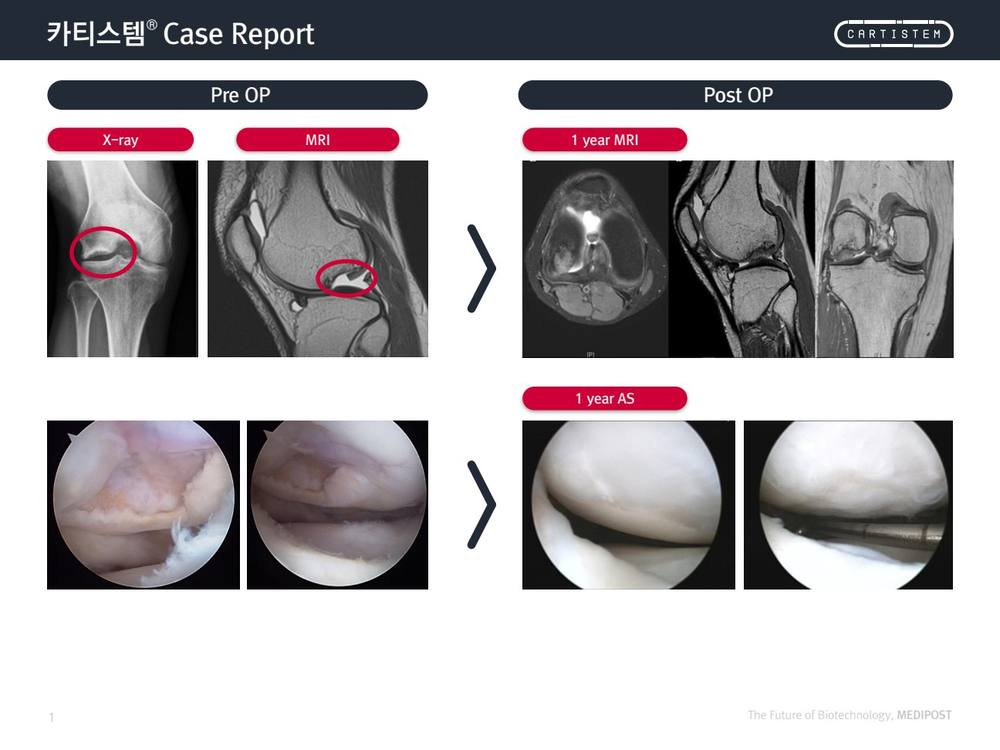
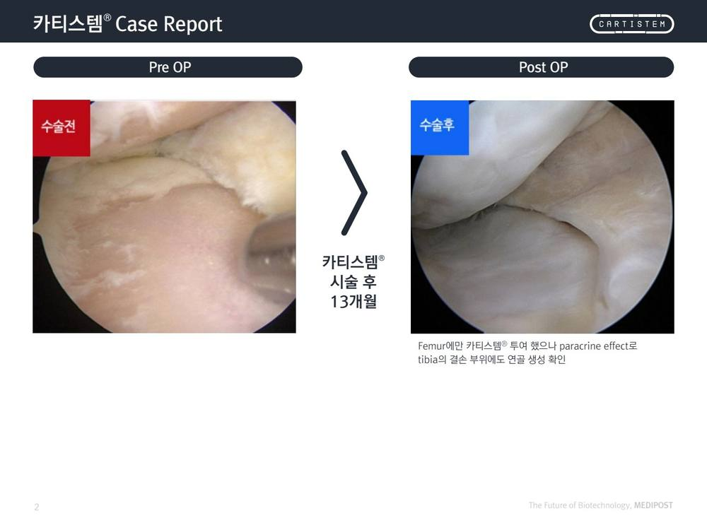
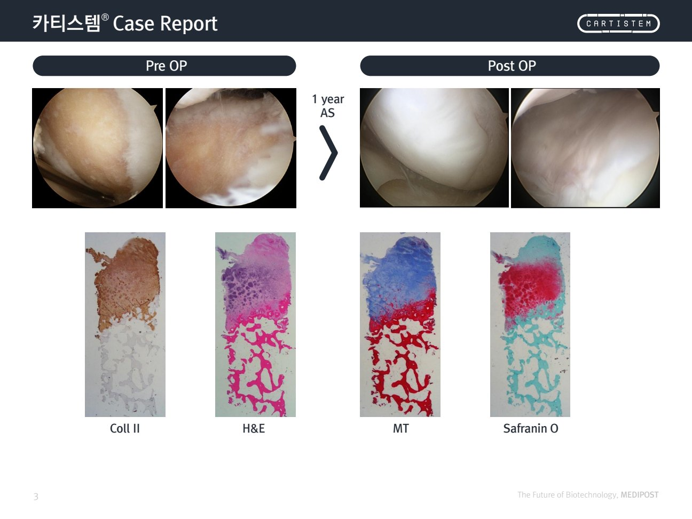
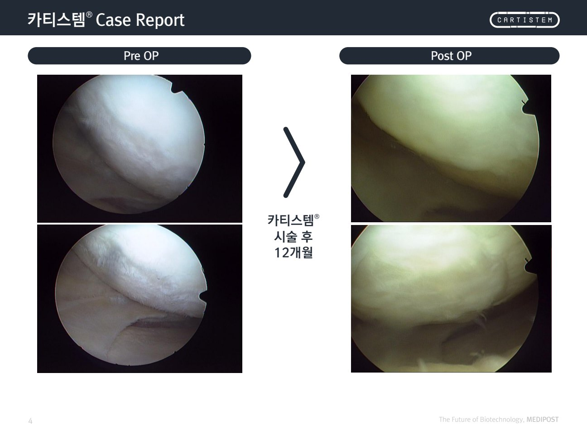
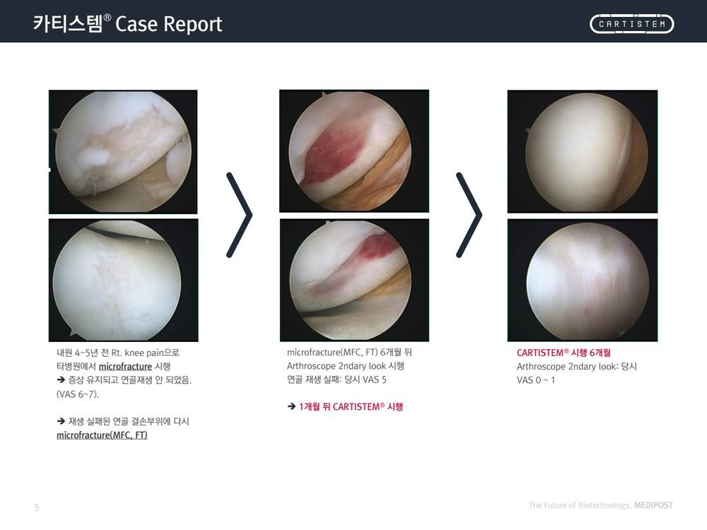
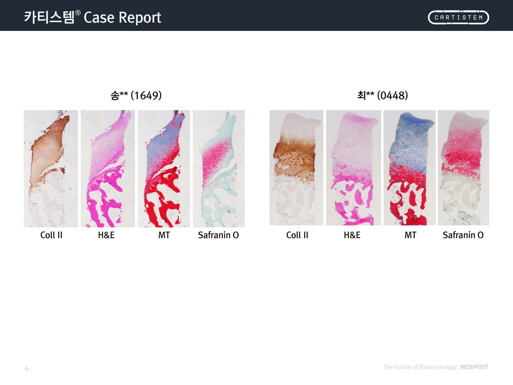
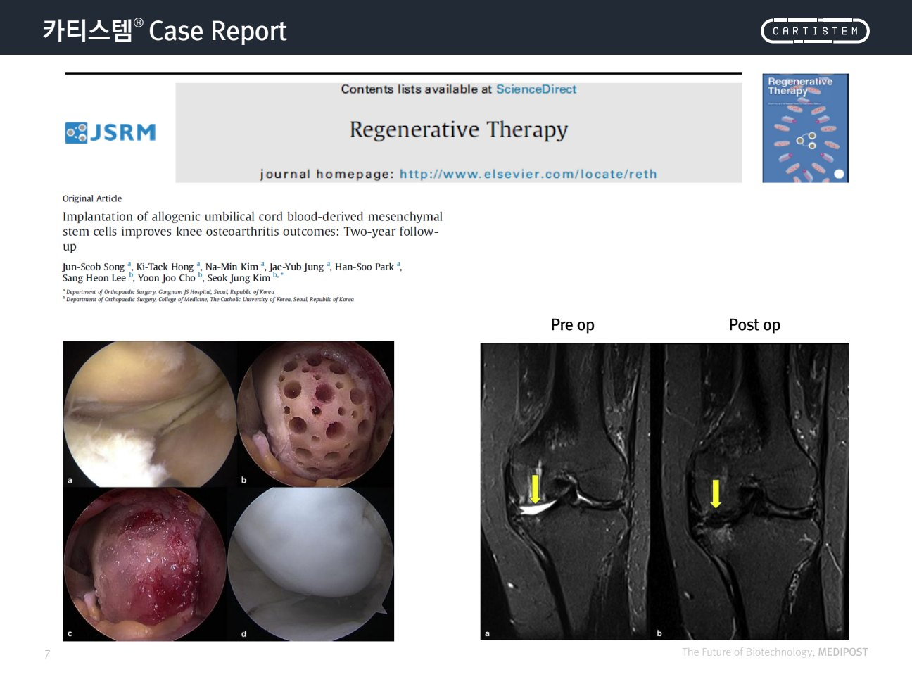
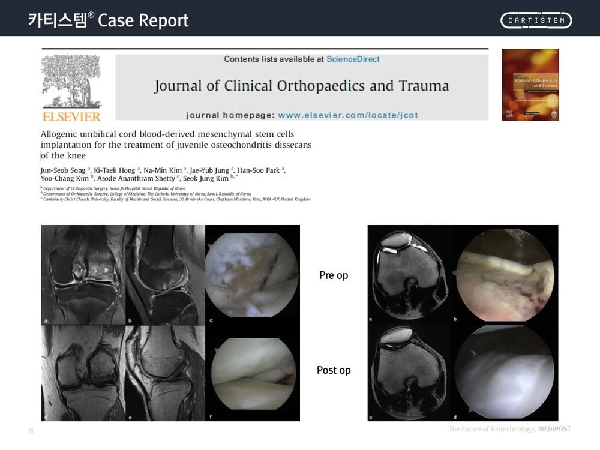
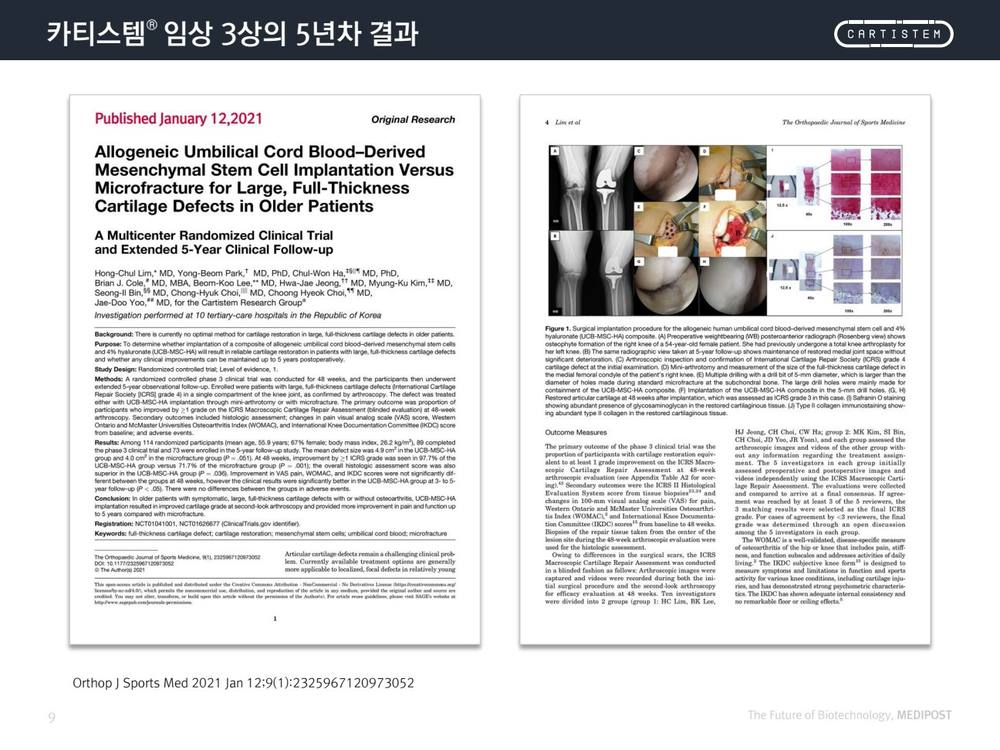

시술 전·후, 실제로
어떻게 달라졌을까요?
실제 사례에서 시술 전(Pre OP)과 후(Post OP)의 X-ray·MRI·관절경·조직검사를 비교하고, 임상 3상 5년 추적 결과를 함께 안내합니다.
📖 이미지 보는 법
X-ray·MRI — 관절 간격·연골 상태를 보는 영상 검사
관절경(AS) — 관절 안을 직접 들여다본 사진. 연골 표면을 확인
조직검사 — Coll II·H&E·MT·Safranin O 염색으로 재생된 연골 조직을 확인
시술 전·후 비교 사례
CASE 01–0601영상·관절경 비교1년 추적

시술 전 X-ray·MRI에서 보이던 연골 결손이, 1년 뒤 영상과 관절경에서 회복된 모습을 비교한 사례입니다.
🌱1년 후 MRI·관절경에서 연골 결손 부위의 회복 소견
🌱1년 후 MRI·관절경에서 연골 결손 부위의 회복 소견
02파라크라인 효과13개월

대퇴골(Femur)에만 카티스템®을 투여했으나, 줄기세포의 파라크라인 효과로 경골(Tibia) 결손 부위에도 연골이 생성된 것을 확인한 사례입니다.
🌱투여하지 않은 인접 결손부에서도 연골 생성 관찰
🌱투여하지 않은 인접 결손부에서도 연골 생성 관찰
03조직학적 재생1년 · 조직검사

관절경 사진과 함께, 재생된 부위의 조직을 여러 방법(Coll II·H&E·MT·Safranin O)으로 염색해 연골 조직이 만들어졌음을 확인한 사례입니다.
🔬조직검사에서 연골 특이 염색 소견 확인
🔬조직검사에서 연골 특이 염색 소견 확인
04관절경 비교12개월

시술 12개월 뒤 관절경에서, 결손되어 있던 연골 표면이 매끈하게 채워진 모습을 시술 전과 비교한 사례입니다.
🌱12개월 후 연골 표면 회복 소견
🌱12개월 후 연골 표면 회복 소견
05미세천공술 실패 후VAS 6~7 → 0~1

타 병원에서 미세천공술(microfracture)을 받았으나 연골 재생이 되지 않고 통증이 지속(VAS 6~7)되던 환자가, 카티스템® 시행 6개월 뒤 관절경(2nd look)에서 통증이 크게 줄어든(VAS 0~1) 경과를 보인 사례입니다.
🌱기존 시술 실패 후 카티스템 시행, 통증 점수 호전
🌱기존 시술 실패 후 카티스템 시행, 통증 점수 호전
06조직학적 비교조직검사

서로 다른 두 증례에서 채취한 조직을 동일한 염색법으로 비교해, 재생된 연골 조직의 특성을 확인한 사례입니다.
🔬증례별 조직검사로 연골 재생 확인
🔬증례별 조직검사로 연골 재생 확인
관절경 추가 사례
CASE 07–0807관절경 Pre / Post

시술 전(Pre op)과 시술 후(Post op) 관절경 사진을 나란히 비교한 사례입니다.
08관절경 Pre / Post

또 다른 증례의 시술 전·후 관절경 비교 사례입니다.
임상 3상 · 5년 추적 결과

대규모 전층 연골 결손 환자 대상
다기관 무작위 배정 임상 3상의 5년 추적 결과
다기관 무작위 배정 임상 3상의 5년 추적 결과
고령 환자의 크고 전층(full-thickness)인 연골 결손에서 카티스템®(동종 제대혈 유래 중간엽줄기세포)과 미세천공술을 비교한 다기관 무작위 임상시험으로, 5년까지 장기 추적한 결과가 국제 학술지에 발표되었습니다.
Park YB, et al. Allogeneic Umbilical Cord Blood-Derived MSC Implantation Versus Microfracture for Large, Full-Thickness Cartilage Defects in Older Patients. Orthop J Sports Med. 2021 Jan 12;9(1):2325967120973052.
핵심 메시지
아래 사례들은 개별 환자의 실제 경과이며, 동일한 결과를 보장하지 않습니다. 회복 정도는 결손 크기·연령·관절 상태 등에 따라 사람마다 다릅니다.
의료진용 설명 포인트 · 주의사항 ▶
설명 예시"이건 실제 환자분들의 시술 전·후 사진이에요. 이렇게 좋아진 사례들이 있고, 5년까지 추적한 임상 결과도 발표돼 있습니다. 다만 똑같이 된다고 약속드릴 수는 없고, 결손 크기나 무릎 상태에 따라 사람마다 결과가 달라요."
사례=개별 경과임을 반드시 전제로 제시합니다. 대표 결과처럼 일반화하지 않습니다.
파라크라인 효과(Case 02): 줄기세포가 주변 환경을 바꿔 재생을 유도하는 원리와 연결해 설명하면 이해가 쉽습니다.
5년 결과(Case 09): "장기 추적 데이터가 있다"는 사실까지만. 구체적 성공률·수치는 의료진의 별도 확인 자료를 따릅니다.
적응증 판단은 검사 결과를 토대로 담당 의사가 합니다.
설명 시 금지 표현
- "○○% 성공한다 / 이 사진처럼 다 된다"
- "완치·100%·평생" 등 효과 보장
- 미세천공술 등 타 치료를 폄하·우열 단정
- "지금 안 하면 못 고친다" 식의 공포 조장
※ 안내 본 자료에 실린 사례는 개별 환자의 실제 경과이며, 모든 환자에게 동일한 결과를 보장하지 않습니다. 치료 적합성·예후는 담당 의사가 판단하며, 효과와 경과는 개인에 따라 다를 수 있습니다.
출처: 메디포스트 카티스템® Case Report 제작자료 · Orthop J Sports Med 2021;9(1) · 내부 참고용